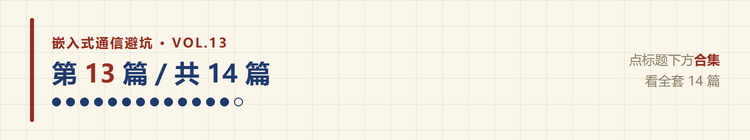
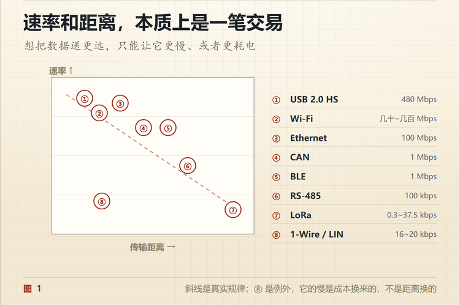
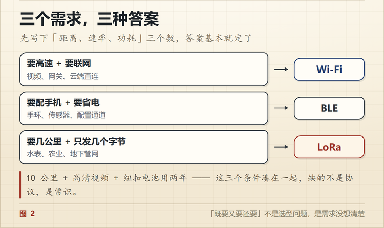

Wi-Fi、BLE、LoRa 怎么选？先看这三个数
🐵 程序小猴 · 嵌入式通信避坑 Vol.13
速率、距离、功耗，三个数最多同时满足两个。

有个项目找我看板子，说好的「电池能用一年」，实测一周就没电。
打开一看，用的是 Wi-Fi 模块，每 30 秒连一次 AP 上报一个温度值。
模块本身没问题，是选型的时候没人算过这笔账。Wi-Fi 连一次 AP 的开销，够 BLE 发好几十包。
无线选型最容易犯的错，就是把它当成「哪个方案更好」的问题。它其实是个约束题。
一、三个赛道，不是三种替代
Wi-Fi、BLE、LoRa 经常被放在一起比，但它们解决的压根不是同一类问题。
| Wi-Fi | BLE | LoRa | |
|---|---|---|---|
| 典型速率 | 几十到几百 Mbps | 1 Mbps 理论，实际几十 kbps | 0.3 到 37.5 kbps |
| 典型距离 | 室内几十米 | 10 米到几十米 | 几公里 |
| 功耗 | 高，几十到几百 mA | 低，连接间隔可调 | 极低，待机微安级 |
| 需要什么 | AP | 手机或主机 | 网关 |
| 频段 | 2.4G / 5G | 2.4G | Sub-GHz |
三个指标摆在一起看，规律很清楚。
速率和距离是一笔交易，功耗是这笔交易的手续费。
想把数据送得更远，只能让它更慢，或者更耗电。

二、Wi-Fi 的价值是 IP 网络
Wi-Fi 最大的价值不在「无线」这两个字，在于它天生接入 IP 网络。
设备连上 AP，就等于进了局域网。TCP、UDP、HTTP、MQTT、OTA，全都是现成的。
所以需要这些的时候，Wi-Fi 是默认选项。
- 要连云端、要走 MQTT
- 要 OTA 升级固件
- 数据量不小，比如图像、日志、配方
- 现场已经有 Wi-Fi 覆盖
代价是功耗。Wi-Fi 模块维持连接就要周期性收发信标，休眠唤醒一次的开销也不小。
用电池供电、要求几个月以上续航的产品，基本别考虑它。
三、BLE 的杀手锏是手机
BLE 的全称是 Bluetooth Low Energy，重点在后两个词。
它的典型场景是设备和手机之间。
不需要路由器，不需要网关，用户掏出手机就能连。这个体验别的方案替代不了。
数据怎么组织，BLE 用的是 GATT 那一套。设备把自己的能力拆成若干个 Service，每个 Service 下面挂 Characteristic，每个 Characteristic 有 UUID，可以读、可以写、可以主动通知。
听起来绕，理解成「把数据组织成一组可发现、可读写的属性」就够了。
代价是距离和速率。十几米之外信号就明显衰减，实际吞吐量也就几十 kbps，还要看连接间隔设成多少。
四、LoRa 一公里外传五十个字节
LoRa 的定位非常明确。
远，极低功耗，速率极低。
它的调制方式让接收灵敏度做到很低，链路预算能到 150dB 以上，郊区几公里、空旷地带十几公里都有可能。
但速率只有几百 bps 到几十 kbps，而且一发就是几十毫秒到上百毫秒，占着信道。
所以它适合的是这种场景。农田里的土壤湿度，每小时上报一次；水表电表，一天传几个字节；地下管网的监测点，几个月换一次电池。
拿它传视频，或者做实时控制，方向就错了。
还有一点容易被忽略，LoRa 通常需要网关。设备把数据发给网关，网关再转成 IP 走后面的路。不是插上就能上网。
五、谁来当中转，这件事要先想清楚
三种方案对「中转设备」的要求完全不同。
| 方案 | 中转设备 | 谁提供 |
|---|---|---|
| Wi-Fi | AP / 路由器 | 现场已有，或者自己架 |
| BLE | 手机，或者带 BLE 的主机 | 用户自己 |
| LoRa | 网关 | 得自己建，或者租 |
这一栏经常被漏掉。
一个农田项目，传感器选 LoRa 没问题，但网关放哪、谁供电、怎么回传，这些问题在选型阶段就要有答案。等到装现场才发现没有网关，就得推倒重来。
六、三个需求，三种答案
把需求翻译成三个数，答案基本就定了一半。
| 需求特征 | 答案 |
|---|---|
| 要高速、要联网 | Wi-Fi |
| 要连手机、要省电 | BLE |
| 要几公里、只发几个字节 | LoRa |
如果三个都想满足，比如「十公里 + 高清视频 + 纽扣电池用两年」，那问题不在协议选择上。
是需求没想清楚。

七、三个常见的选错
用 Wi-Fi 做电池产品。 前面那个一周没电的项目就是。要么改成有线供电，要么换成 BLE 加手机中转。
用 BLE 做远距离。 BLE 的 100 米是理想空旷距离，穿两堵墙就剩十几米。要求几百米覆盖的，得看 LoRa 或者加中继。
用 LoRa 做实时控制。 它的单包传输就要几十到上百毫秒，还要遵守占空比限制（部分地区要求 1%）。要求 100 毫秒内响应的控制回路，它撑不住。
八、天线不能最后才想
这是无线产品最容易踩的坑，而且踩了很难补救。
PCB 画完、外壳开模完成，才想起来「这里放个天线吧」，基本就晚了。
天线周围的净空、地平面的大小、馈线的走线、外壳的材质，每一样都影响实际性能。
金属外壳最常见。开发板上裸板测 100 米，装进金属机柜可能只剩 10 米，甚至完全没信号。
要在结构设计之前就把天线位置定下来，留出净空区，最好做一版实测。
九、怎么验证选型对不对
不要只看模块手册上的「最远距离」和「峰值速率」。
列一张需求表，把这几项写清楚。
- 每天发多少条报文，每条多少字节
- 最坏情况下允许多大延迟
- 电池容量和目标寿命
- 现场有没有现成的 AP 或网关
- 需不需要双向控制
- 安装位置和周围环境
然后在目标现场实测，别在实验室测。丢包率和实际功耗都要测，这两个数只有实测才准。

从 UART 的一根 TX 线，到以太网和无线，通信方式看起来越来越复杂。
但选型最后绕不开的还是那几个问题。传多远、传多快、多少节点、多大功耗、多强实时性、环境多恶劣、成本多少。
没有最好的通信协议，只有更适合当前约束的方案。
你手上这个项目，最后选了哪种无线？评论区说说理由。
📌 这是「嵌入式通信避坑」第 13 篇，全系列 14 篇，从串口一路讲到 CAN 和无线选型。
💬 觉得有用就点个在看，下一篇是系列的收尾，讲 USB 转串口那四颗芯片到底差在哪。